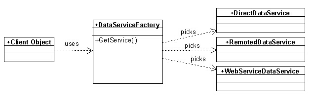

Data Service Introduction
The Data Service object is used to execute basic data access command against a database back end. The Data Service object features methods such as ExecuteQuery() and ExecuteStoredProcedure() that pass commands to the database and may retrieve results.
While in theory, the data service can be used anywhere within an application, it is typically only used by business objects. Therefore, most developers will never directly talk to a data service object, unless they create a new breed of business object (or perform some very specialized programming tasks)..
Data services are never created directly. Instead, a data service factory serves up a data service that is appropriate for the current application configuration. Whenever a developer chooses to use a data service directly, the data service factory class has to be used to gain access to the desired service.
The Technology
The data service object is responsible for connecting to the back-end database in a generic and polymorphic fashion. The basic idea is to generically obtain a data service object based on the application configuration. The object will therefore be created by a data service factory.
The general idea is that there are different types of services that can be configured. One can use a strategy pattern to semi-dynamically pick the data service that is most appropriate:

The idea here is that the data service factory is configured to have a primary and a secondary service (or perhaps a whole chain). Normally, the direct data service would be the default service. The factory would instantiate that service and call a method on it to test the connection. If the connection fails, it would go to the secondary service, such as the remoted or the web service data service. Again, the factory tests the connection and proceeds if the connection passes.
Using a DataService
In this example, we assume that we want to access an SQL Server database that resides on a local server. We therefore can have the following settings in our configuration:
<xml version="1.0" encoding="utf-8" ?>
<configuration>
<appSettings>
<add key="DataServices" value="SqlDataService"/>
<add key="database:UserName" value="devuser"/>
<add key="database:Password" value="devuser"/>
<add key="database:Server" value="(local)"/>
<add key="database:Catalog" value="Northwind"/>
</appSettings>
</configuration>
This provides all the configuration needed to let our data service infrastructure access a local SQL Server instance. We can thus access data in this fashion now. To do so, we first need to grab an instance of a data service. Instead of manually creating and configuring such a service, we use the DataServiceFactory helper class to provide one for our subsequent use:
using (var service = DataServiceFactory.GetDataService("database"))
using (var dataSet = service.GetList("Customers", "*", "Cust"))
{
Console.WriteLine(dataSet.Tables["Cust"].Rows[0][0]);
}
Note: There also is a convenient shortcut to using a data service through the
Datahelper class. See below for more information.
Note that this is really just a convenient similification of letting the service build a database command an execute it. We could have also chosen the longer version of the same code (but then why would we?. For completeness, here is that example:
using (var service = DataServiceFactory.GetDataService("database"))
using (var command = service.BuildAllRecordsQueryCommand("Customers", "*", "LastName"))
using (var dataSet = service.ExecuteQuery(command, "Cust"))
{
Console.WriteLine(dataSet.Tables["Cust"].Rows[0][0]);
}
The first line creates an instance of the service and configures it with all the settings linked to the "database:" prefix. In this case, this gives us a data service that connects us to SQL Server and the Northwind database. (Note that the system could also be configured to use a completely different database, such as Oracle, or CosmosDB).
Line two gives us a command object that queries all records from the Customers table, and includes all fields (*) and sets the sort-order to "LastName". The next line then executes that query, creates a DataSet object and adds a table named "Cust" (in most scenarios that would be the same as the SQL table name, but this example aims to show that it can be different). The following code can then access and update information in that table.
Note that there is an even shorter and more convenient version using the Data helper class (for more detail, see below):
using (var dataSet = Data.GetList("Customers"))
{
Console.WriteLine(dataSet.Tables[0].Rows[0][0]);
}
Which of these options should you use? That depends on how much control you need. The
Datashortcut class is a convenient way to perform many data operations. However, it provides less control than using a specific service. The service also provides different options that provide more or less control.service.GetList()is convenient, butservice.ExecuteQuery()allows for any data command conceivable, whileGetList()only returns simple lists.
Note that it is possible to configure the system with different data services to create a fail-over chain:
<add key="DataServices" value="SqlDataService, WsSqlDataService"/>
In this case, the system will first try to make a connection to a local instance of SQL Server using the SqlDataService object. If that fails (perhaps because the user has no local access to the configured SQL Server instance), then it will try to use the next option in the list, which is WsSqlDataService. This service accesses SQL Server over a web-based service. It is easy to imagine other examples as well. For instance, one could use offline cache databases and the like.
It is of course also possible to query data in different ways. Consider this example:
using (var service = DataServiceFactory.GetDataService("database"))
using (var command = service.NewCommand("SELECT Id, FirstName, LastName FROM Customers WHERE LName LIKE @Name"))
{
var parameter = service.NewCommandObjectParameter("@Name", "Egger%");
command.Parameters.Add(parameter);
using (var dataSet = service.ExecuteQuery(command, "Cust"))
{
Console.WriteLine(dataSet.Tables["Cust"].Rows[0][0]);
}
}
In this example, a custom query with added parameters (using the parameters collection for injection-safety) is executed to retrieve data.
These are just two examples of how to use the data services directly to access data. There are a number of additional methods that can be explored that run various types of queries and even update data. Many of those methods provide convenient shortcuts to standard data operations. For instance, querying all data in a table (a table that stores a list of countries in this example) can be done with every business object like this:
using (var service = DataServiceFactory.GetDataService())
using (var ds = service.GetList("Countries"))
{
// Do something with the data here...
}
The same approach can also be used to fine-tune what the list returns and what order it is in:
using (var service = DataServiceFactory.GetDataService())
using (var ds = service.GetList("Countries", "Id, Name", "Name DESC"))
{
// Do something with the data here...
}
It is also possible to query data using .NET async syntax (note the addition of the await keyword and that the method is now GetListAsync():
using (var service = DataServiceFactory.GetDataService())
using (var ds = await service.GetListAsync("Countries", "Id, Name", "Name DESC"))
{
// Do something with the data here...
}
All these types of convenience methods on the service object provice async and synchronous versions of the same method.
Note that
GetList()is functionally identical toGetAllRecords().
Another common task is to retrieve a single record by some kind of identifier (usually a primary key). This can be done like so:
using (var service = DataServiceFactory.GetDataService())
using (var ds = service.GetSingleRecord("Customer", "*", "PK", new Guid("DA1EBB67-9FD5-4E68-9970-773F967865BA"))
{
// Do something with the data here...
}
One of the most flexible methods is the Query() method, which can be used to fire arbitrary queries into the database. Consier this example:
using (var service = DataServiceFactory.GetDataService())
using (var ds = service.Query("SELECT TOP 10 Id, FirstName, LastName FROM Customers ORDER BY TotalSales"))
{
// Do something with the data here...
}
It is also possible to pass further parameters to the query method:
var parameters = new Dictionary<string, object>();
parameters.Add("@State", "@Hawaii");
using (var service = DataServiceFactory.GetDataService())
using (var ds = service.Query("SELECT TOP 10 Id, FirstName, LastName FROM Customers WHERE State = @State ORDER BY TotalSales", parameters))
{
// Do something with the data here...
}
Or, the shorter version of the same example:
using (var service = DataServiceFactory.GetDataService())
using (var ds = service.Query("SELECT TOP 10 Id, FirstName, LastName FROM Customers WHERE State = @State ORDER BY TotalSales", new Dictionary<string, object>() {{ "@State", "@Hawaii" }} ))
{
// Do something with the data here...
}
This is just a short list of some of the available convenience methods (and overloads of those methods).
The Data Class
Milos also provides a concenient helper class called Data, which provides a very direct way to access data without having to worry about the details of creating a data service. This class provides many of the convenience methods of the data service, without having to create a service. Here is the equivalent of the above example but using the Data class:
using (var ds = Data.Query("SELECT TOP 10 Id, FirstName, LastName FROM Customers ORDER BY TotalSales"))
{
// Do something with the data here...
}
This automatically creates a data service and uses it to execute the query. (All the above examples can be shortened like this by using the Data class).
This is very convenient, but it also gives up some control as to how the service is created. When using the DataServiceFactory class, one can specify which configuration to use, and one can even create multiple services at the same time:
var service1 = DataServiceFactory.GetDataService(); // uses the 'database' prefix
var service2 = DataServiceFactory.GetDataService("myOracleData");
var service3 = DataServiceFactory.GetDataService("myCosmosDBData");
This creates 3 different services based on their respective configurations, and one can then access data on all these databases at the same time. This is not as such possible using just the Data shortcut.
Note that it is possible to tell the Data helper which configuration prefix to use:
var data1 = Data.GetList("Countries"); // Defaults to using 'database' as the config prefix
Data.DataConfigurationPrefix = 'myOracleData';
var data2 = Data.GetList("Countries");
Data.DataConfigurationPrefix = 'myCosmosDBData';
var data3 = Data.GetList("Countries");
This would fire the GetList() against three completely databases. Note however that this is not thread-safe! Therefore, it is recommended to either only use the Data shortcut for configurations using the 'database' prefix, or, if must be, set the prefix once during startup, and then leave it at that. In other words: In modern systems it is not considered safe to change the used prefix on the Data class in mid-flight.

Comment or report problem with topic